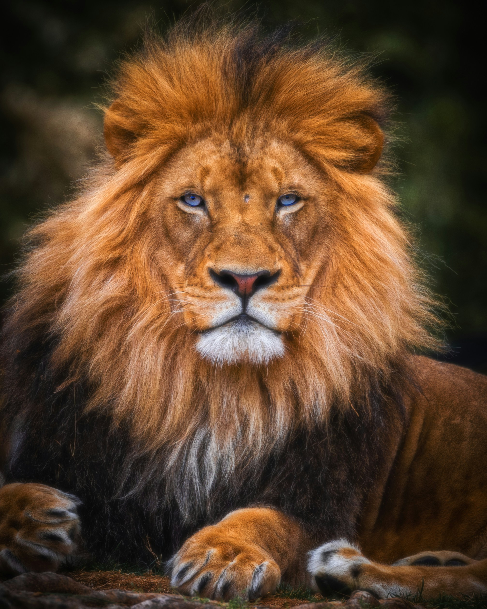

NAIROBI NATIONAL PARK
This Is One Of The Many Reasons To Visit The Beautiful City Of Nairobi

ABOUT NAIROBI NATIONAL PARK
Nairobi National Park is the main tourist attraction for visitors to Nairobi. Visitor attractions include the park's diverse bird species, cheetah, hyena, leopard, and lion. Other attractions are the wildebeest and zebra migrations in July and August, the Ivory Burning Site Monument, and the Nairobi Safari Walk and animal orphanage.[4] Inhabitants of Nairobi visit the park and thousands of Kenyan children on school field trips visit the park each week.[18]
EXAMPLES OF ANIMALS IN THE PARK AND THEIR FACTS
LIONS

The lion is a generalist hypercarnivore and is considered to be both an apex and keystone predator due to its wide prey spectrum.[109][110] Its prey consists mainly of ungulates, particularly blue wildebeest, plains zebra, African buffalo, common warthog, gemsbok and giraffe.[111] In India, chital and sambar deer are the most common wild prey,[46][111][112] while livestock contributes significantly to lion kills outside protected areas.[113] They usually avoid fully grown adult elephants, rhinoceroses and hippopotamus and small prey like dik-dik, hyraxes, hares and monkeys.[111][114] Unusual prey include porcupines and small reptiles. Lions kill other predators but seldom consume them.[115]
Young lions first display stalking behaviour at around three months of age, although they do not participate in hunting until they are almost a year old and begin to hunt effectively when nearing the age of two.[116] Single lions are capable of bringing down zebra and wildebeest, while larger prey like buffalo and giraffe are riskier.[96] In Chobe National Park, large prides have been observed hunting African bush elephants up to around 15 years old in exceptional cases, with the victims being calves, juveniles, and even subadults.[117][118] In typical hunts, each lioness has a favoured position in the group, either stalking prey on the "wing", then attacking, or moving a smaller distance in the centre of the group and capturing prey fleeing from other lionesses. Males attached to prides do not usually participate in group hunting.[119] Some evidence suggests, however, that males are just as successful as females; they are typically solo hunters who ambush prey in small bushland.[120] They may join in the hunting of large, slower-moving prey like buffalo; and even hunt them on their own. Moderately-sized hunting groups generally have higher success rates than lone females and larger groups.[121]
Lions are not particularly known for their stamina. For instance, a lioness's heart comprises only 0.57% of her body weight and a male's is about 0.45% of his body weight, whereas a hyena's heart comprises almost 1% of its body weight.[122] Thus, lions run quickly only in short bursts at about 48–59 km/h (30–37 mph) and need to be close to their prey before starting the attack.[123] One study in 2018 recorded a lion running at a top speed of 74.1 km/h (46.0 mph).[124] They take advantage of factors that reduce visibility; many kills take place near some form of cover or at night.[125] The lion's attack is short and powerful; it attempts to catch prey with a fast rush and final leap, usually pulls it down by the rump, and kills with a clamping bite to the throat or muzzle. It can hold the prey's throat for up to 13 minutes, until the prey stops moving.[126]
ELEPHANTS

Elephants are the largest living land animals. Three living species are currently recognised: the African bush elephant (Loxodonta africana), the African forest elephant (L. cyclotis), and the Asian elephant (Elephas maximus). They are the only surviving members of the family Elephantidae and the order Proboscidea; extinct relatives include mammoths and mastodons. Distinctive features of elephants include a long proboscis called a trunk, tusks, large ear flaps, pillar-like legs, and tough but sensitive grey skin. The trunk is prehensile, bringing food and water to the mouth and grasping objects. Tusks, which are derived from the incisor teeth, serve both as weapons and as tools for moving objects and digging. The large ear flaps assist in maintaining a constant body temperature as well as in communication. African elephants have larger ears and concave backs, whereas Asian elephants have smaller ears and convex or level backs.
Elephants are herbivorous and will eat leaves, twigs, fruit, bark, grass, and roots. African elephants mostly browse, while Asian elephants mainly graze.[34] They can eat as much as 300 kg (660 lb) of food and drink 40 L (11 US gal) of water in a day. Elephants tend to stay near water sources.[34][87] They have morning, afternoon, and nighttime feeding sessions. At midday, elephants rest under trees and may doze off while standing. Sleeping occurs at night while the animal is lying down.[87] Elephants average 3–4 hours of sleep per day.[88] Both males and family groups typically move no more than 20 km (12 mi) a day, but distances as far as 180 km (112 mi) have been recorded in the Etosha region of Namibia.[89] Elephants go on seasonal migrations in response to changes in environmental conditions.[90] In northern Botswana, they travel 325 km (202 mi) to the Chobe River after the local waterholes dry up in late August.[91]
CHEETAHS

The cheetah is a lightly built, spotted cat characterised by a small rounded head, a short snout, black tear-like facial streaks, a deep chest, long thin legs and a long tail. Its slender, canine-like form is highly adapted for speed, and contrasts sharply with the robust build of the genus Panthera.[12][61] Cheetahs typically reach 67–94 cm (26–37 in) at the shoulder and the head-and-body length is between 1.1 and 1.5 m (3 ft 7 in and 4 ft 11 in).[10][62][63] The weight can vary with age, health, location, sex and subspecies; adults typically range between 21 and 72 kg (46 and 159 lb). Cubs born in the wild weigh 150–300 g (5.3–10.6 oz) at birth, while those born in captivity tend to be larger and weigh around 500 g (18 oz).[12][60][62] Cheetahs are sexually dimorphic, with males larger and heavier than females, but not to the extent seen in other large cats.[63][64][65] Studies differ significantly on morphological variations among the subspecies.[64]
The coat is typically tawny to creamy white or pale buff (darker in the mid-back portion).[10][62] The chin, throat and underparts of the legs and the belly are white and devoid of markings. The rest of the body is covered with around 2,000 evenly spaced, oval or round solid black spots, each measuring roughly 3–5 cm (1.2–2.0 in).[60][66][67] Each cheetah has a distinct pattern of spots which can be used to identify unique individuals.[63] Besides the clearly visible spots, there are other faint, irregular black marks on the coat.[66] Newly born cubs are covered in fur with an unclear pattern of spots that gives them a dark appearance—pale white above and nearly black on the underside.[12] The hair is mostly short and often coarse, but the chest and the belly are covered in soft fur; the fur of king cheetahs has been reported to be silky.[10][68] There is a short, rough mane, covering at least 8 cm (3.1 in) along the neck and the shoulders; this feature is more prominent in males. The mane starts out as a cape of long, loose blue to grey hair in juveniles.[60][68] Melanistic cheetahs are rare and have been seen in Zambia and Zimbabwe.[66] In 1877–1878, Sclater described two partially albino specimens from South Africa.[60]